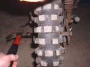
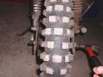
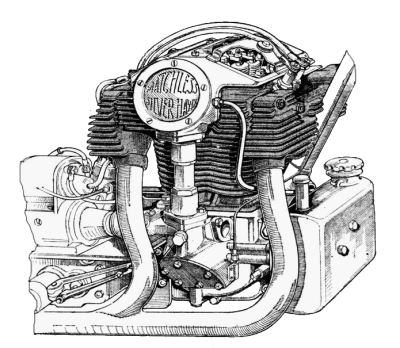
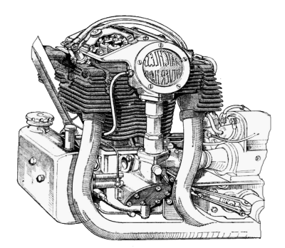

¶ The BIBLE tells us not to worry, and if we are trusting in Jesus for our salvation we don't have to worry! But that is not the type of worrying I'm talking about.
Lots of times we run across cylenders, heads, shafts and the like that are rusted on tight. Other times the idiot that worked on it before you glued it on with gasket cement. To get these parts apart you squrt on the penitrating oil and work the part up and down, back and forth "worrying" it. A dead blow hammer(with lead shot in the head of the hammer) helps or a rawhide mallet. The thing is to do it gently and to keep at it.
 

 |
 |
Copyright © 1999-2000 dansmc.com. All rights reserved.